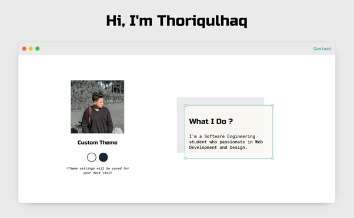
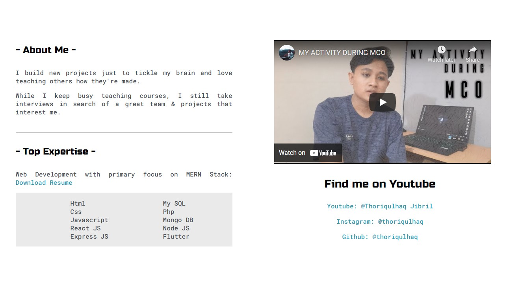
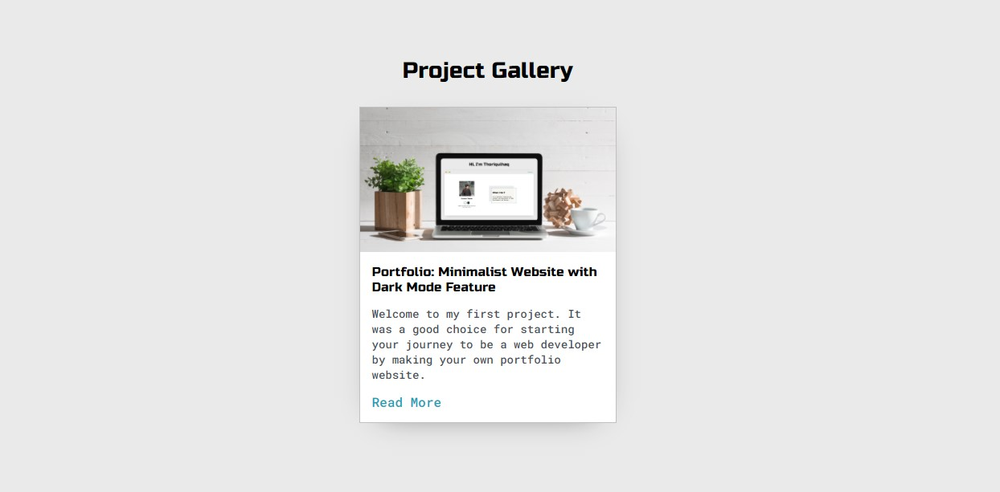
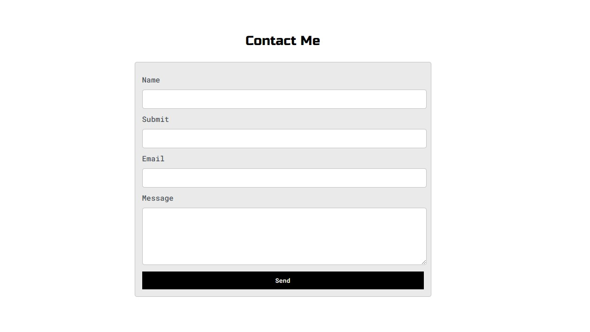

Portfolio: Minimalist Website with Dark Mode Feature
Post on May, 17th 2021

This was a project that I develop it firstly in 2021. My goal in this project is to apply my skills to the field of web development and design with what I have previously learned in the basics of web programming before starting any further stages.
This simple project that I made is a portfolio which is very mandatory for a web developer to be able to create their own website portfolio. To beautify the appearance of my portfolio, I tried to apply the dark mode feature which is very popular and cannot be separated from every website or application also the last used mode will be stored in local storage so that when it is opened again, it will directly apply the last used mode.
Stack & Technology :
- Html
- Css
- Javascript
Gallery :




Link :
-- Unavailable (Uploading Process) --